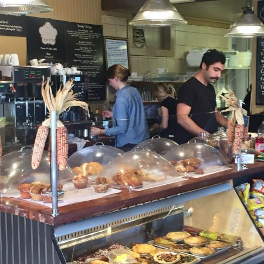

The Cafe became a reality for Anna in 2006. I wanted the cafe to be about cheerful service,
original
flavors, and a comfortable atmosphere, like eating in your own big country kitchen.
Our convenient location on East Main Road and excellent sandwiches earned us a mention in the
Boston
Globe for a place not to miss on your way to the Newport beaches.
A few years later, "& Ice Cream" was added to the end of the name when Anna purchased
Shiver Me Timbers ice cream parlor next to the Cafe.
Anna D's Cafe & Ice Cream is so thankful for our local community,
we couldn't have done it without you!!

The Cafe became a reality for Anna in 2006. I wanted the cafe to be about cheerful service,
original
flavors, and a comfortable atmosphere, like eating in your own big country kitchen.